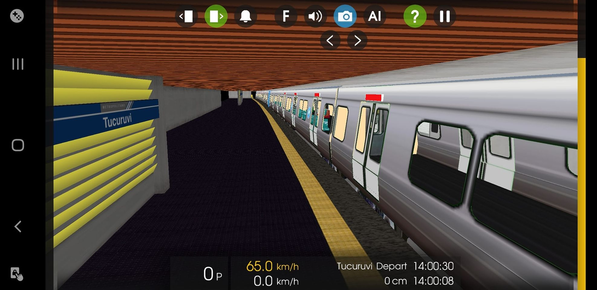
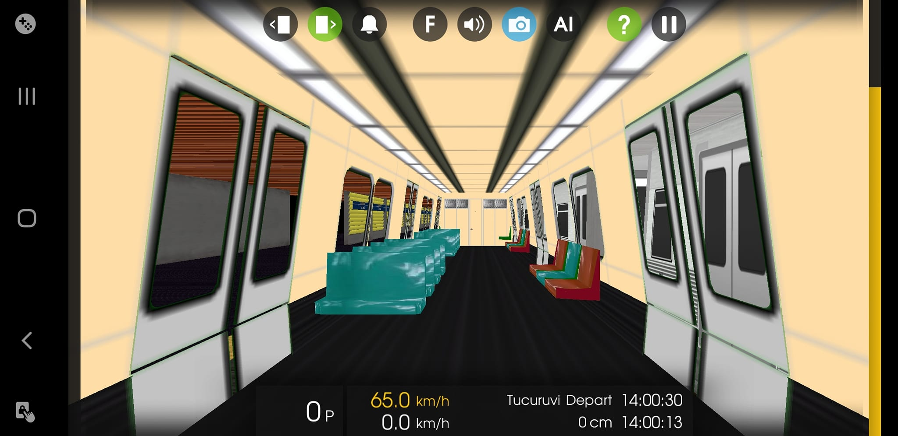
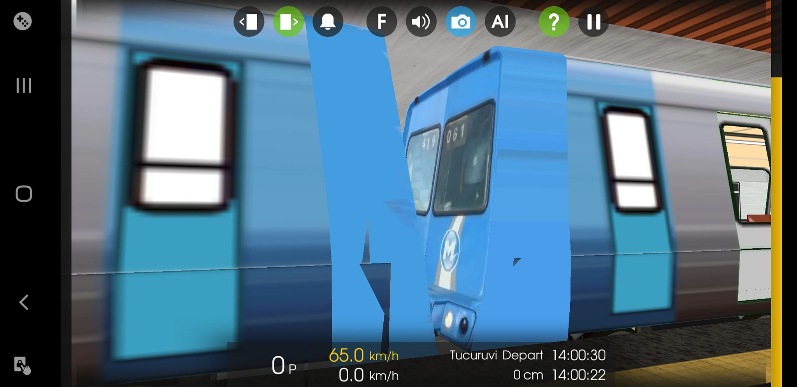
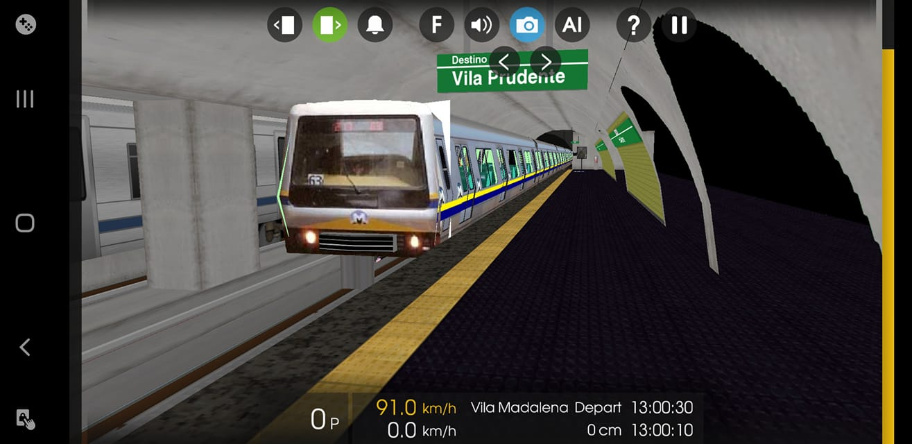
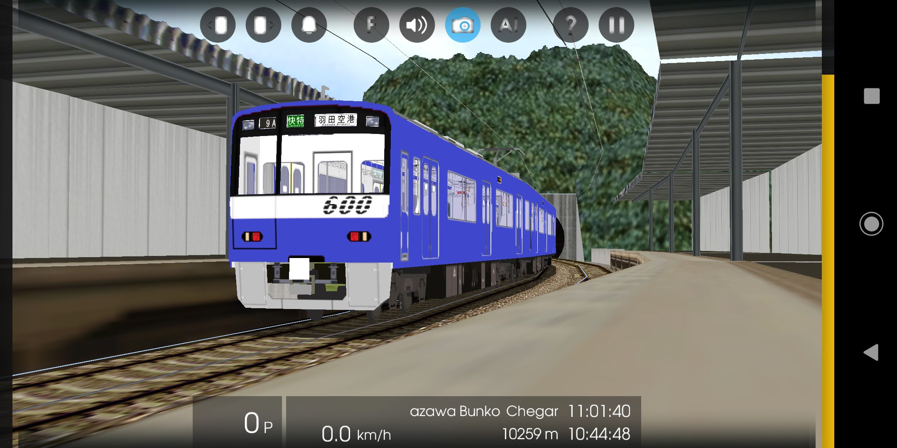
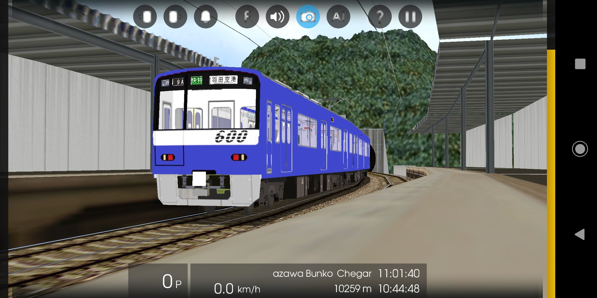
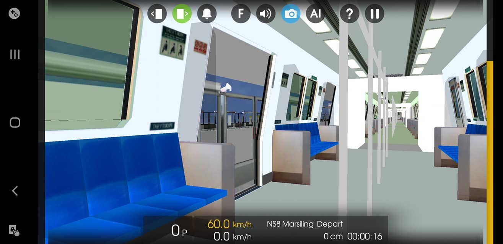
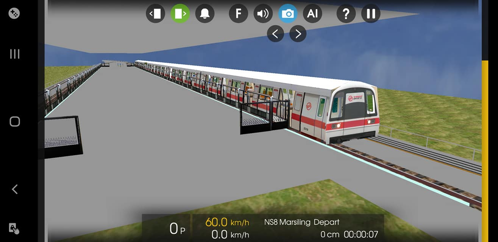
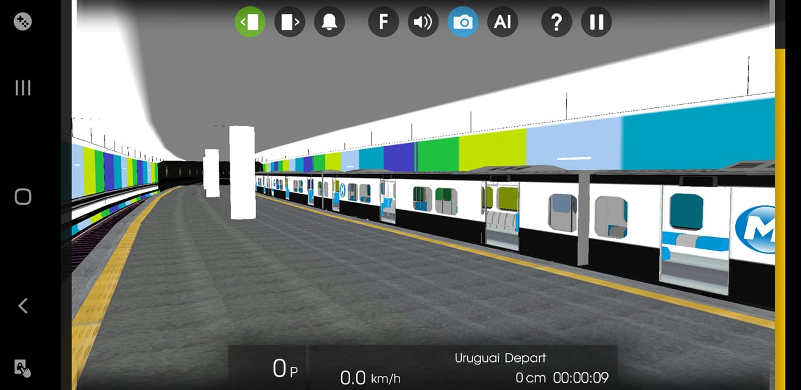
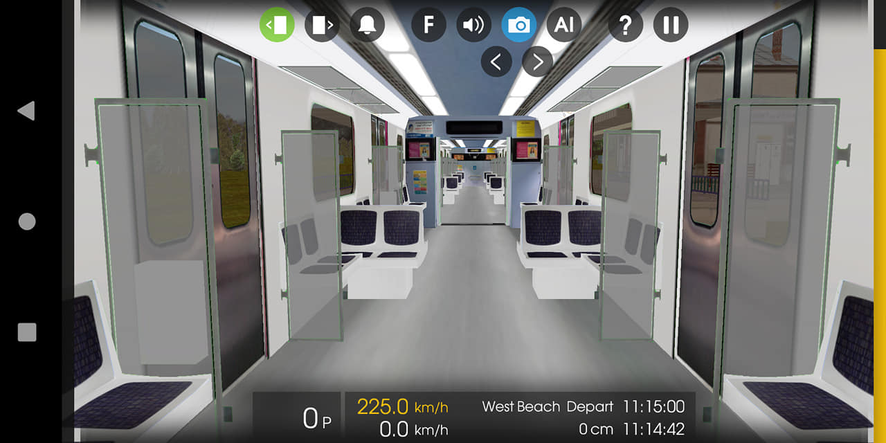

Fala galera, Uma prévia de como está ficando a Estação Estácio já com alguns adesivos posicionados de propaganda e abertura pra escada de saída e entrada na plataforma, juntamente com os novos sons do Mafersa Série 1000 do Metrô Rio agora sendo feito a todo vapor.
#L1MetrôRioHmmsim
Salve Salve galera, uma prévia doq estou preparando ksks Copyright©HRB Brasil, 2022
  Linha 5 Lilás tomando forma. Autorização - OpenBVE Modernizações

fala rapaziada ! tudo certo? entao, hoje a HRB ganha 2 novos membros para ajudar o ritmo da equipe, ambos passaram na prova e ficaram na media 90/100 ou 95/100. sejam bem vindos (Mr Frota F) e (Mr D588) !!! Ass: Gui Frota H
Fala Galera, hoje trago uma surpresinha pra vocês que em breve irá ser disponibilizado. HRB Evolui, Concorrência diminui e baba ovos aumenta.

bm dia :D sabe a tão esperada L5 MDZ? então temos a autorização bê já começamos os trabalhos com conversões de trens e rotas não peça, não está pronta! ai vai uma fotinha sexy 😏


Fala galera, hoje venho trazer um 9500 da CCR Fictício, ainda faltam poucas coisas, e quem sabe, terá lançamento deles? Fiquem ligados aqui na página para novas novidades!!! Pedro Mafersa.
Salve galera, pela infelicidade de muitos e felicidade de outros, Ramal Saracuruna Versão 3 + Realismo está temporariamente adiado a continuação do desenvolvimento da rota para dar a preferência da Linha 1 Laranja do Metrô Rio que ligará Uruguai até General Osório. Como muitos estão ansiosos pelo mesmo, o Mafersa Série 1000 está 95% dos sons prontos, Alstom Série 2000 está com 75% dos sons prontos e o CNR Série 4000 está pronto só dando uns ajustes nas texturas. Sobre os status da linha, está cerca de 35% pronta já com os Avisos Sonoros prontos e posicionados. Ass: Pedro Mafersa
Lançamento novo galera!! Série 2500 Animado Feito por Leonardo Santos Convertida pela equipe Rota feita por Wellington Arantes Convertida pela Equipe Link do download da descrição:
fala rapaziada ! tudo certo?
entao, hoje a HRB ganha 2 novos membros para ajudar o ritmo da equipe, ambos passaram na prova e ficaram na media 90/100 ou 95/100.
sejam bem vindos (Mr Frota F) e (Mr D588) !!!
Ass: Gui Frota H
Uma prévia de como está o Mafersa Série 1000
Salve galera, pela infelicidade de muitos e felicidade de outros, Ramal Saracuruna Versão 3 + Realismo está temporariamente adiado a continuação do desenvolvimento da rota para dar a preferência da Linha 1 Laranja do Metrô Rio que ligará Uruguai até General Osório. Como muitos estão ansiosos pelo mesmo, o Mafersa Série 1000 está 95% dos sons prontos, Alstom Série 2000 está com 75% dos sons prontos e o CNR Série 4000 está pronto só dando uns ajustes nas texturas. Sobre os status da linha, está cerca de 35% pronta já com os Avisos Sonoros prontos e posicionados. Ass: Pedro Mafersa
Fala galera, beleza? Estamos precisando de alguém que saiba mexer em páginas e sites do Google para fazermos um blog da HRB pra lançarmos os projetos lá, e não nos canais do YouTube e nem por aqui pelo Facebook.
Agradeço:
Pedro Mafersa.
Fala Galera, eu sei que outubro tá chegando ao fim, mais em breve irei lançar a Linha 1 Azul com os PA's Infantis. Vocês apoiam o lançamento ou querem ver o novo Ramal Saracuruna V3 e cancelar a Linha 1 Azul com PA's Infantis? Fica a critério de vocês!
Fala galera, depois de algum tempo, venho mostrar um pouco de nossos projetos de como estão ficando, temos o Bombardier Innovia 300, famoso Frota M que está em processo final de remoção de bugs, temos o CAF Série 5000 do Metrô Rio que está em processo final de adaptação de sons, temos portas de plataformas criadas do 0 pelo modder da HRB Leonardo Santos e o mais esperado, o Ramal Saracuruna V3, está com poucos bugs que serão arrumados e está em fase final a conversão e edição do 5000 para logo em seguida começar o Série 4000. Ambos virão no Ramal Saracuruna V3.


Olá pessoal! Tudo bem? Mais uma Novidade! Toei 5500, Em breve Será Lançado em uma nova Linha Da Keikyu, no momento estou trabalhando no som da Desaceleração.


Ramal Saracuruna v3? Pra Hmmsim?Em breve..

E aí galera, querem que eu faça as pinturas do Metrô Rio tanto Mafersa quanto Alstom nos modelos novos para lançar em breve na Linha 1? Deixem nos comentários que lerei todos.
O novo Série 500 para o Ramal Saracuruna v3! Agora ele tem Animação e Visão de Cabine!


Fala Galera! Mais um Internacional, O Keikyu 600 Blue Sky, está quase sendo finalizado, vai ser Lançado em breve, fiquem atentos no canal:
 

Que tal um projetinho internacional? Foi animado o trem Kawasaki C651 212/213 de Singapura. Em breve para download!!!
 Achou que a gente tinha parado? Estação Uruguai ganhando forma, foi trocado a parede e as pilastra, já no CNR Série 4000 foi feito a mudança de sons e deixado o mais realista possível.
E aí pessoal, primeiro status pra vcs! Alstom/Mafersa pronto para Openbve e em breve será convertido para Hmmsim!

E aí galera, de boa? Ansiosos pro Ramal Saracuruna V2? Mas hoje não venho trazer status da linha e sim do CNR 3000, foi convertido do OpenBVE, ainda está sem animação, logo logo tratei mais um trem sensacional que está sendo editado por um de nossos membros. Em breve, iremos disponibilizar o download do Ramal Saracuruna v2 + um Pack de trens. Aguardem novas novidades!
Temos Mafersa Série 1000 do Metrô Rio pro OpenBVE e em breve teremos para o Hmmsim

HRB - Hmmsim Rail Brasil ! Alstom 5000 V2 animado! Em fase de [beta] !!! Em breve para seu Hmmsim!